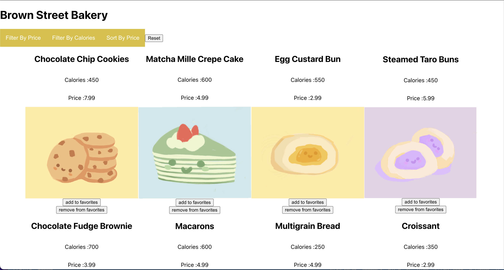

In this project I wanted to create an online shopping website for a local bakery. I wanted the design to be intuitive for the user to interact with and enjoy using.
I began the process by exploring the most popular products of the bakery and identifying what customers needs are. In an interview with customers of the bakery I discovered that a lot of them are concerned with the calories and prices of each product. Some of them said that if there was a way to sort products online by their price, calories, or both they would most likely visit the website to purchase items. Another concern that customers had was that they wouldn't be able to identify items just by their names and needed a visual to aid them.
While implementing the shopping website I kept in mind what some of the customers had told me about their needs. For the layout of the website I decided to use a grid so that all the items are clearly organized and displayed on the website. For each item I made the image of the item the bigges since cusomters thought that was the most important element. I also added the prices and calories of each item to help the users purchse based on their specific needs. Items on the website are also able to be filtered based on price and calories for the convenience of users. Feel free to checkout Brown Street Bakery!
